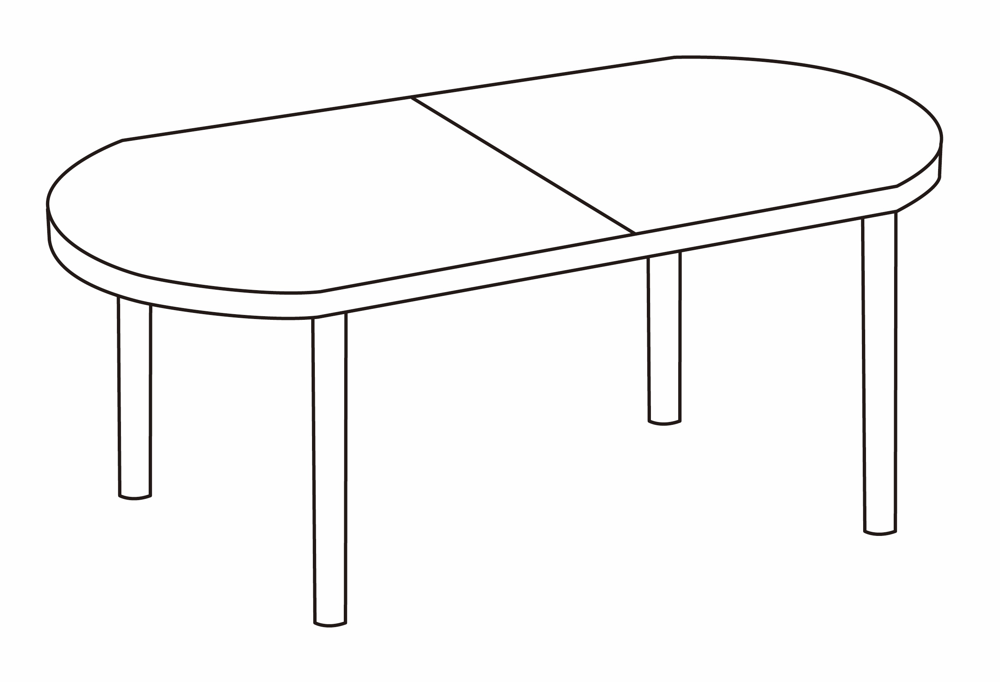

데스크 북페어
데스크 북페어는 버드콜과 닌겐 페이퍼 프레스가 기획한 마이크로 북페어이다.
일정
2024.12.13.금 - 12.15.일
오후 12시 - 20시
프로그램
금요일
14:00-15:00 WG Radio On AIR
토요일
13:00-16:00 Print At Your Service +닌겐 페이퍼 프레스
18:00-19:00 셀프 퍼블리싱에 관하여 +드래곤힐프린트샵 임재호
일요일
12:00-20:00 북체인
18:00-19:00 『출판사의 첫 책』에 관한 대화 +저자 송현정
장소
버드콜
서울시 종로구 자하문로 12길 10-7, 1층
기획 및 운영
버드콜과 닌겐 페이퍼 프레스
어떻게?
- 참여를 원하는 책과 이메일 주소를 적은 종이를 담아 다음 주소로 11/29(금)까지 택배를 보낸다.
버드콜(010-3116-6151)
서울시 종로구 자하문로 12길 10-7, 1층
- 데스크 북페어 운영진은 책의 실물을 보고 ±50종의 책을 선정한다.
- →명제가 있거나 집요함이 있을 것, 형식이 내용을 삼키지 않을 것, 고양이나 캐릭터의 귀여움으로 유혹하지 않을 것 등의 선정 기준이 있다.
- 책이 선정되면, 이메일로 선정 알림과 안내를 받고, 책이 선정되지 않으면, 책은 쪽지와 함께 반송된다.(택배비는 운영진이 부담)
- 참여비는 책 1종 당 30,000원이며 팀 당 최대 3종의 책으로 참여할 수 있다.
- 참여비 외의 판매 수수료는 없다.
왜?
- 북페어의 신청 절차와 참여비용, 홍보, 운영, 디자인을 간소화하기
- 기획안이 아닌 책의 실물을 받는 신청과 선정 방식을 시도해보기
- 출판하는 사람들의 커뮤니티를 만들기
- 출판하는 행위 자체에 대하여 적은 인원과 긴 대화를 나누기
- 선정된 책들을 통해 버드콜과 닌겐 페이퍼 프레스가 생각하는 좋은 책에 대한 주관적인 기준을 드러내기
- 북페어 기간에 맞춰 새로운 책을 기획하고 제작하는 현상에 질문을 던지기
- 타 북페어에 참여한 경험을 나누기
기타 문의
@deskbookfair
deskbookfair@gmail.com
